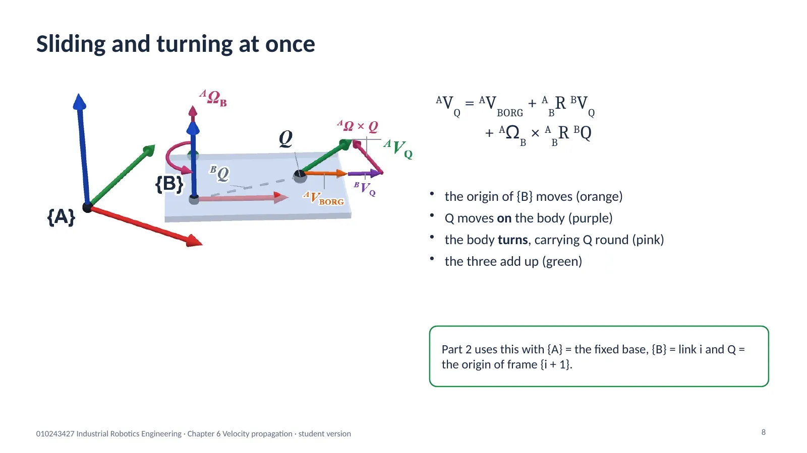
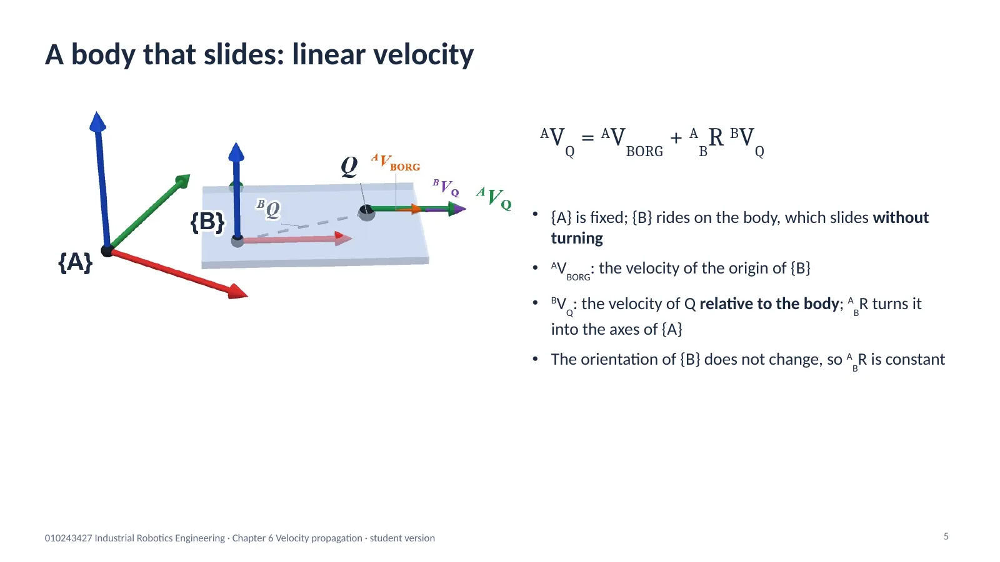
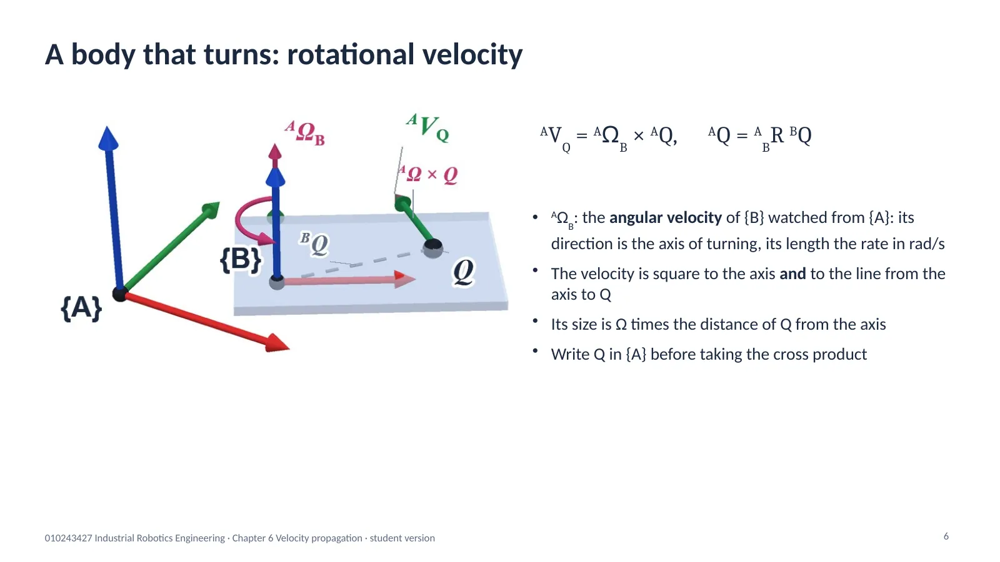
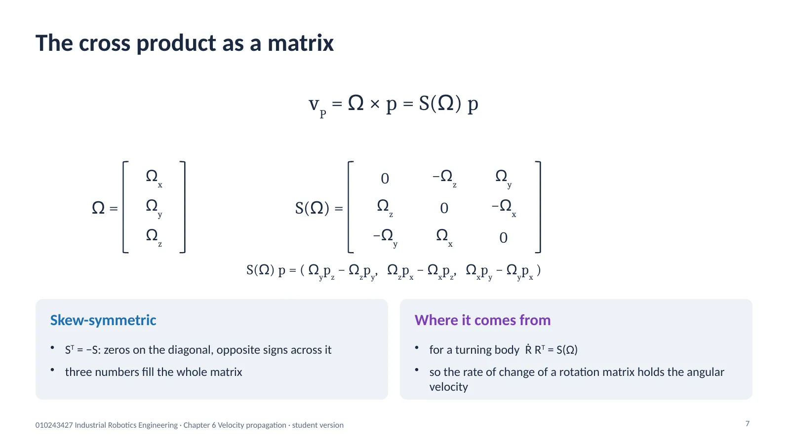
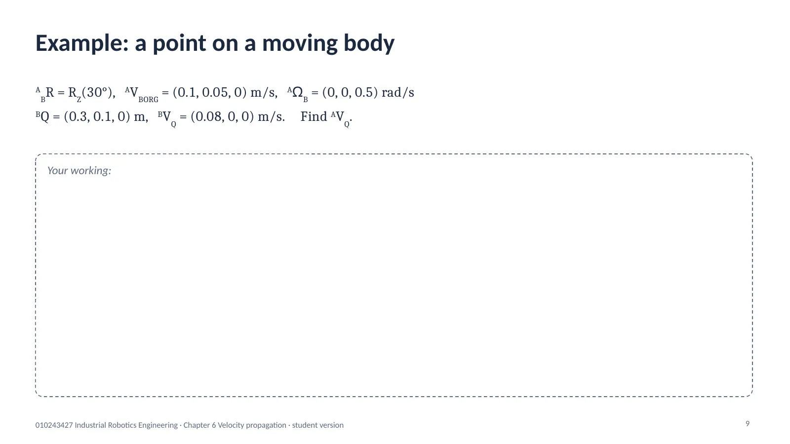

บทที่ 5 หาจาโคเบียนด้วยการหาอนุพันธ์ของสมการตำแหน่ง บทที่ 6 หาจาโคเบียนตัวเดียวกันโดยไม่ต้องหาอนุพันธ์: ส่งต่อความเร็วจากก้านหนึ่งไปยังก้านถัดไป ตั้งแต่ฐานจนถึงปลายแขน วิธีนี้ต้องใช้สูตรเพียงสูตรเดียว คือความเร็วของจุด Q บนวัตถุ {B} ที่ทั้งเลื่อนและหมุน เมื่อมองจากเฟรม {A} ที่อยู่นิ่ง หน้านี้สร้างสูตรนั้นทีละส่วน: วัตถุที่เลื่อนอย่างเดียว วัตถุที่หมุนอย่างเดียว แล้วรวมทั้งสองอย่างเข้าด้วยกัน และเขียนผลคูณไขว้ (cross product) ในรูปเมทริกซ์ หน้านี้ครอบคลุมสไลด์หน้า 5–9 มี 4 โจทย์
Chapter 5 found the Jacobian by differentiating the position equations. Chapter 6 finds the same Jacobian without differentiating: it passes velocities on from one link to the next, from the base to the tool. That takes a single formula: the velocity of a point Q of a body {B} that slides and turns, watched from a fixed frame {A}. This page builds it part by part (a body that only slides, a body that only turns, then both at once) and writes the cross product as a matrix. It covers slides pp. 5–9, with 4 problems.



